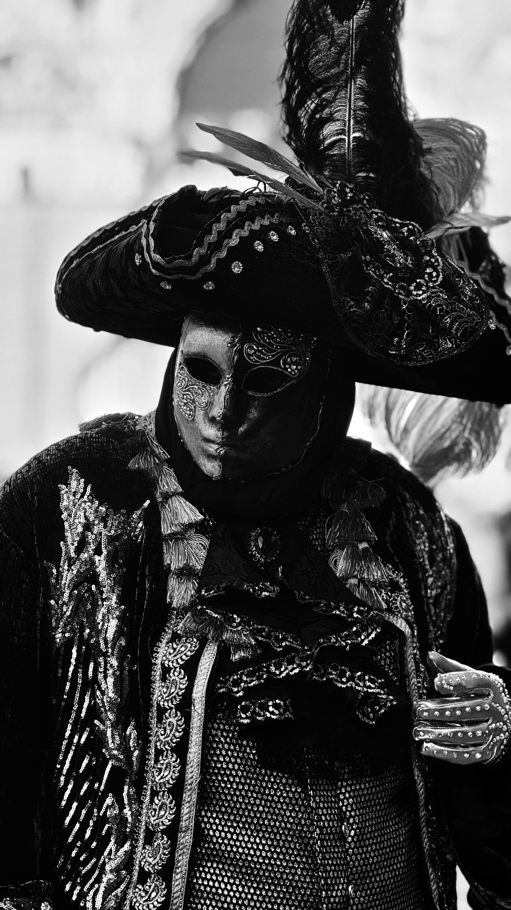

Sala I
La Bauta
The old Venetian disguise: a square, jutting jaw and no mouth at all, built out from the chin so the wearer can eat, drink and talk underneath it. With the black cloak and tricorn it was the one costume the Republic allowed almost anywhere — which is exactly why everyone wore it.
- Form
- Bauta
- Medium
- Cartapesta, black lacquer on gesso
- Made
- 2026
- Size
- 24 × 18 × 14 cm
- Status
- Sold — Carnevale 2026 Sold
- Commission
- from €140